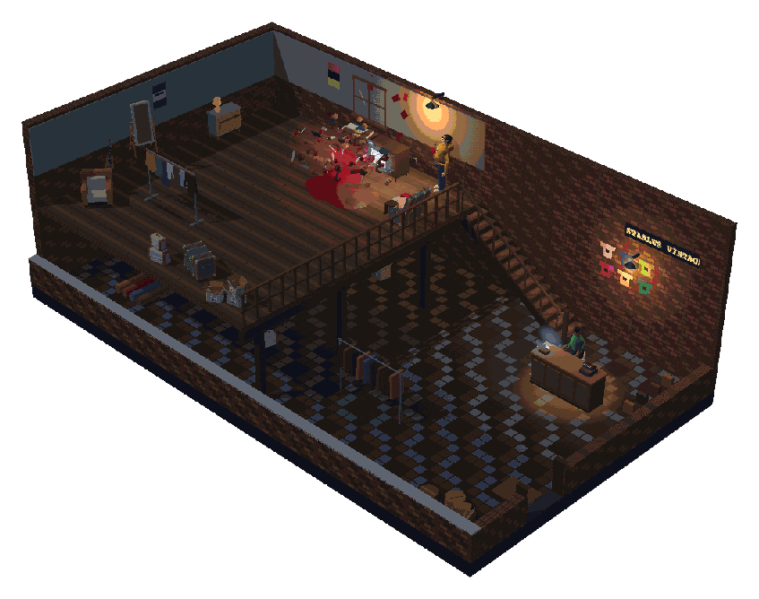

Literatura
-

Novela · 14 películas
Esta no es otra de tus putas novelas juveniles
Partidas
-

Campaña · 2 películas
Berlín en Tinieblas
-

Campaña · 1 película
Kingmaker
Ludo Bermejo
Escenas de mis novelas y de nuestras partidas de rol, construidas como maquetas de píxeles y rodadas como películas cortas, con los diálogos del libro o de la mesa. Mientras suenan puedes girar la cámara con el ratón o con el dedo.

Novela · 14 películas
Campaña · 2 películas
Campaña · 1 película